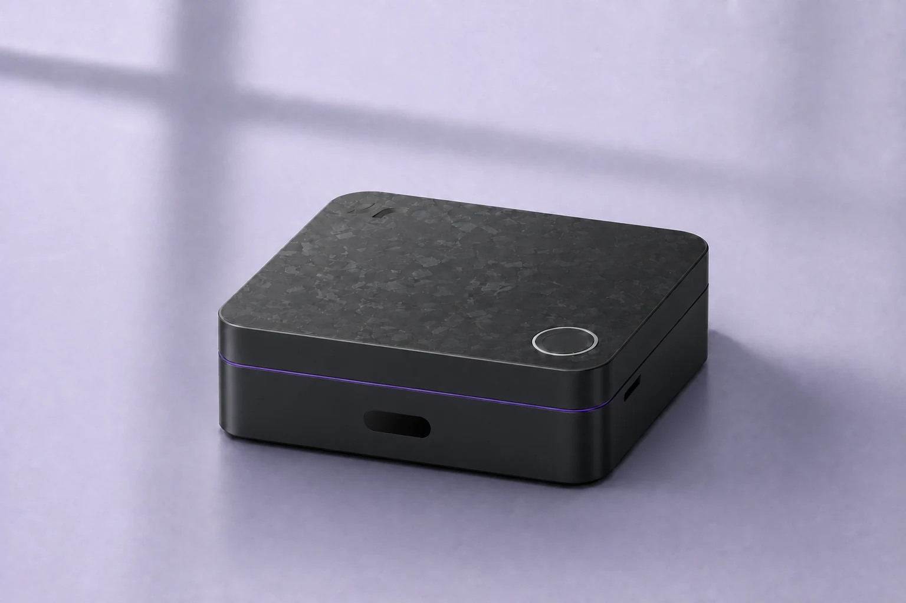

WELCOME HOME
Welcome to Navi.
A little setup. A home that understands you.
Plug in Navi’s power cable and keep your phone nearby. Choose how Navi will connect to your home.
No Navi app needed. Your account and home settings are created on Navi.
CONNECT WITH WI-FI
Connect your phone to Navi.
Navi opens a temporary Wi-Fi hotspot for its first setup. Use Bluetooth if your browser supports it, or join Navi’s hotspot.
Connect with Bluetooth
Keep your phone on your home Wi-Fi. Connect to Navi with Bluetooth, then confirm this phone on Navi.
Your Wi-Fi password travels directly to Navi. If Bluetooth is unavailable, use the hotspot steps below.
Connect through Navi’s Wi-Fi hotspot
Use these hotspot steps if your browser cannot connect with Bluetooth.
- Open your phone’s Wi-Fi settings.Leave this page open so you can return to it.
- Join the Navi setup network on your card.If your phone asks for a password, use the one on your card.
- Stay connected, even without Internet.If your phone asks to switch networks or use mobile data, choose to stay on Navi’s Wi-Fi.
- Return here and continue.On Navi’s local page, choose your home Wi-Fi. After Navi connects, switch your phone back to your home Wi-Fi.
Check the device number on the next page. Account setup uses Navi’s secure local connection.
Can’t see Navi’s setup Wi-Fi?
Check the power cable and keep your phone close to Navi. If the setup network has closed, long-touch Navi’s top control to reopen it, then check your phone’s Wi-Fi list again.
CONNECT WITH ETHERNET
Bring Navi onto your home network.
A cable connects Navi directly to your router. Your phone stays on your home Wi-Fi.
- Connect Navi to your router.Plug an Ethernet cable into Navi and your router. Keep Navi connected to power.
- Join your main home Wi-Fi on your phone.Use the same router as Navi. Guest networks may keep your devices apart.
- Open Navi’s local setup.Check that the device number matches the label on your Navi.
Your account and home settings stay on Navi. You can choose cloud features later.
Navi didn’t open
- Check Navi’s power cable and outlet.
- For wireless setup, keep your phone on Navi’s temporary Wi-Fi until you choose your home network.
- For Ethernet, connect your phone to your main home Wi-Fi and check that Navi’s cable reaches the same router.
- Guest Wi-Fi may block local devices. Use the main home network.
- If the device address is unavailable, use the local entry on your card or find Navi in your router’s connected-device list.
Navi opens its secure page before asking for account details. Don’t bypass a certificate warning; check the address and retry.